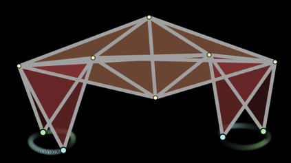

ניתן להשתמש בשיטות מתמטיות כדי ליצור הדמיה של תהליכים מכניים או פיזיים. הרובוט המהלך בהדמיה שמימין בנוי מחלקי מסה קטנים המחוברים באמצעות קפיצים נוקשים. אורכם של הקפיצים המחוברים לרגליים משתנה בצורה מחזורית. כך נוצרת תנועת הליכה.
בכל פריים, משתמשת תוכנית ההדמיה במיקומים ובמהירויות של כל הנקודות כדי לחשב את הכוחות הפועלים על המסות. כוחות אלה משמשים בתורם כדי לחשב את המיקומים והמהירויות עבור הפריים הבא. באופן זה נוצרת אשליה של תנועה חלקה.
|  |
תנועת הרגליים של הרובוט